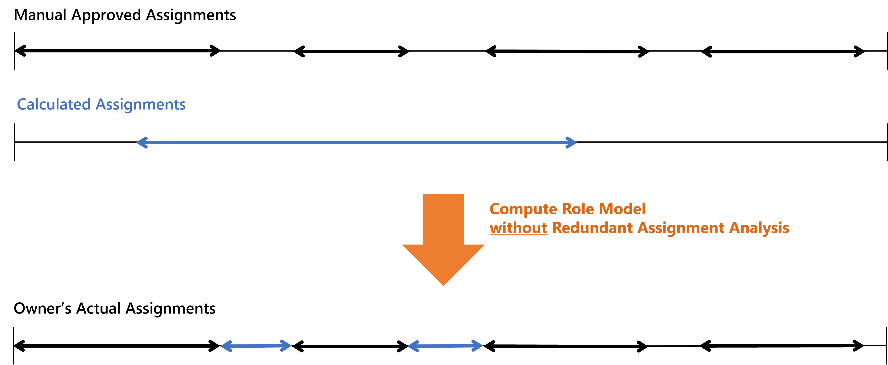
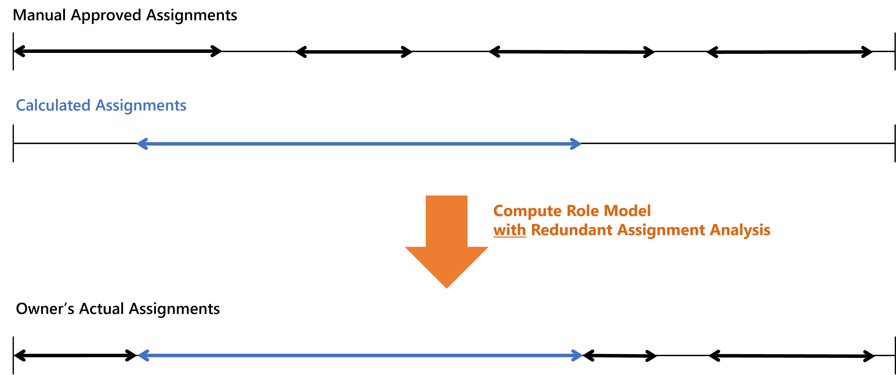
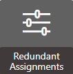
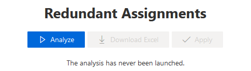
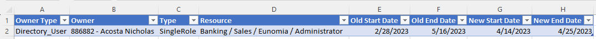
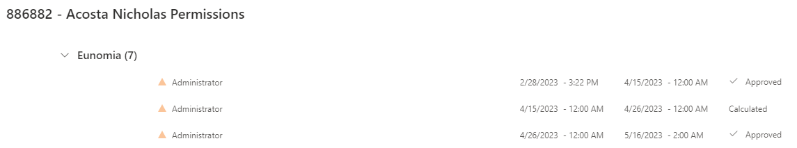

Remove Redundant Assignments
How to remove redundant assignments, i.e. manual assignments of roles and resource types that are assigned by a rule too. See the Entitlement Assignment topic for additional information.
Overview
Assignment rules can sometimes give to users an entitlement that they had already received manually. Hence, new assignment rules can imply redundancies between the entitlements assigned manually and approved, and those calculated by a rule and assigned automatically. See the Automate Role Assignments topic for additional information.
Netwrix recommends removing redundant assignments after any assignment rule is created or updated.
This guide is about switching the manual assignments, which are allowed by the role model, into calculated automatic entitlements handled by the role model. Once automatic, an entitlement is fully part of the role model and stops constituting an exception.
Assignment validity period
All entitlements are assigned on a given validity period, i.e. from a given start date to a given end date:
- When assigning an entitlement to a user manually, the start and end dates are specified explicitly unless the end date is locked. See the Create a Role Manually topic for additional information.
- When assigning entitlements to users via assignment rules, the start and end dates are based on the owner's data, for example their contract or position start/end dates. These assignments are automatic.
Netwrix recommends always preferring calculated assignments over manual ones, because calculated assignments follow the changes in their owners' data and are consequently more secure.
For example, consider a user Helen who starts working as an architect with a given role.
When assigning the role manually, when Helen changes her job, her manager will have to remove the role manually. When assigning the role via a rule, when Helen changes a job, the role will be removed automatically.
Process
This process is an optimization of the role model. It is part of the "compute role model" process where all rules of the role model are applied.
The classic behavior gives priority to approved manual entitlements over calculated automatic ones. A manual assignment stays as is, even if the entitlement is also assigned by a rule.
For example, consider a user who has a given entitlement which was assigned to them manually on several distinct time periods. When creating a rule that assigns the same entitlement to them automatically on a given time period, then we have:

The redundant assignment analysis gives priority to the rules inside the role model and the policy. When an entitlement is assigned via a rule, it is stated as calculated, even if it is also assigned manually. Thus, manual assignments whose start and end dates overlap with the validity period are to be truncated or deleted.
For example, consider the same situation as before. Using the redundant assignments analysis, then we have:

Redundant assignments can be removed by Identity Manager only when the corresponding assigned items are tagged as redundant and displayed in the most recent report. The manual assigned items that are not tagged are still kept as discretionary entitlements and will not be removed.
Participants and Artifacts
For a given managed system, integrators may need the help of the application owner who knows the application's users, entitlements and data model.
|
Input |
Output |
|---|---|
|
Role catalog (required) |
Minimized derogation’s |
See the Create Roles in the Role Catalog , Automate Role Assignments , and Perform Role Mining topics for additional information.
Remove Redundant Assignments
Remove redundant assignments by proceeding as follows:

Step 1 – Click on Redundant Assignments on the home page in the Administration section.

Step 2 – Click on Analyze to tag the manual roles and resource types from all policies eligible for conversion to an automatic state.
NOTE: Previous tags are cleared at each instance of this tagging process.
Step 3 – Click on Download Excel to download a dedicated XLSX report which contains one tab per entity type representing identities.

The example states that in the entity type Directory_User, the user Nicholas Acosta had the single role Banking/Sales/Eunomia/Administrator starting from February 28th 2023 (dateA) until May 16th (dateD). A new single role rule assigns him this role from April 14th (dateB) until 25th 2023 (dateC).
It means that Nicholas Acosta will have the role in the Calculated state from dateB to dateC, and he will keep the role in the Approved state from dateA to dateB and from dateC to dateD.
Step 4 – If the report's content is satisfying, then click on Apply to actually switch eligible manual roles to calculated.
Verify Redundant Assignment Removal
In order to verify the process:

Step 1 – Access the user directory from the home page.

Step 2 – For one of the users mentioned in the report, access their permissions.
Step 3 – Check that their roles (mentioned in the report) have actually switched from approved to calculated.

When removing redundant assignments based on the previous report example the setting will be as above.
Once the steps above completed, the state changes to Approved.